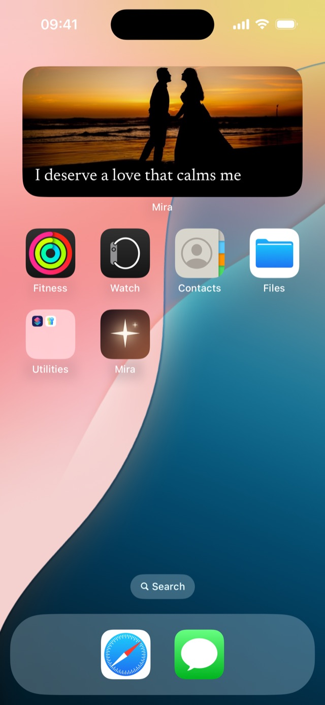

Mira · Guide
How to make a vision board on your iPhone
There are three ways to keep a vision board on an iPhone. Two are built into iOS and cost nothing; the third is Mira, which is what this site is for, so read the comparison with that in mind.
All three put pictures of what you want where you will actually see them. They differ in whether words come with the pictures, whether the board changes on its own, and where on the phone it lives.
Way 1: a Photos widget on your Home Screen
iOS can show one photo album as a widget, and moves through the album by itself. It is free, and it is a good start if your board is only pictures.
- Open Photos and make an album called “Vision board”. Add the photos you want to see.
- Press and hold an empty area of the Home Screen until the apps jiggle, then tap Edit → Add Widget in the top left.
- Search for “Photos”, swipe to the Album widget and add it.
- Press and hold the new widget, tap Edit Widget, and choose your “Vision board” album.
What it can’t do: there is no text, so the words that go with each picture stay in your head or in a note somewhere else.
Way 2: a Lock Screen wallpaper that shuffles
Your Lock Screen wallpaper can cycle through a set of photos. It fills the whole screen, which makes it the most striking of the three, but you only see it while the phone is locked.
- Wake the phone without unlocking it, then press and hold the Lock Screen.
- Tap the + button to add a new wallpaper, then choose Photo Shuffle.
- Choose the photos for your board. The ••• button sets how often they change: on tap, on lock, hourly or daily.
- Tap Add, and set it as a wallpaper pair if you want the Home Screen to match.
What it can’t do: the pictures sit behind the clock and your notifications, and there is still nowhere to put the words.
Way 3: Mira, photos with words on a widget
Mira is a vision board app built around the widget. Every photo has a short phrase with it, and the widget moves through your board on a schedule you pick, on the Home Screen, the Lock Screen, or both.
- Install Mira and pick the areas of life you want on your board. It starts you off with photos and phrases for them, so there is something to see straight away.
- Swap in your own photos and write your own words, up to 42 characters each, or take a suggested phrase.
- Press and hold an empty area of the Home Screen until the apps jiggle, tap Edit → Add Widget and search for “Mira”.
- Pick a size and drop it wherever you like. It rotates on its own.

The trade-off: Mira is free for a small board, and a bigger one needs Premium.
Which one to use
If your board is only pictures and the Home Screen is enough, the Photos widget is free and does the job. If you want the board to be the first thing you see, the shuffling wallpaper is hard to beat. If the words matter as much as the pictures, which is the idea behind a vision board, that is what Mira is for.
Start with three photos
A board you make in ten minutes and actually see does more than a perfect one you never open. Pick three photos, give each a line, and put them where you will look.

on your iPhone